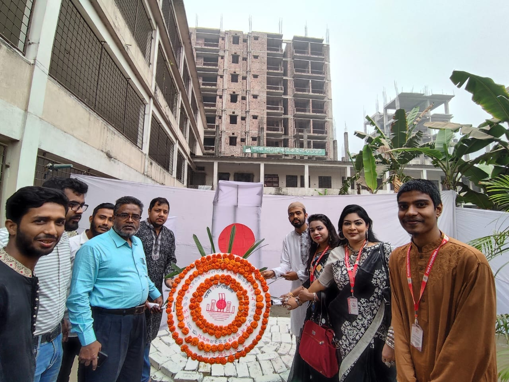

পার্ক পলিটেকনিকে অনুষ্ঠিত হলো WORLD ENGINEERING DAY-2023 FOR SUSTAINABLE DEVELOPMENT.
আধুনিক জীবনে প্রকৌশলের ভূমিকা সম্পর্কে সচেতনতা বাড়াতে UNESCO আন্তর্জাতিক দিবস হিসাবে প্রতি বছরের ৪ মার্চ বিশ্বব্যাপী পালিত হয় প্রকৌশলী দিবস। সারা বিশ্বের সাথে তাল মিলিয়ে এই বছরও ড্যাফোডিল পলিটেকনিকে অনুষ্ঠিত হচ্ছে World Engineering Day-2023 For sustainable development.

ইনোভেশন, প্রজেক্ট প্রদর্শনী, হ্যাকাথন, ইঞ্জিনিয়ারিং ইনোভেশন, র্যালি, সাংস্কৃতিক অনুষ্ঠানসহ নানা আয়োজনের মধ্য দিয়ে পার্ক পলিটেকনিকের শিক্ষার্থীদের নিয়ে উৎযাপন করা হয় World Engineering Day-2023. এসএমই ফাউন্ডেশনের ব্যবস্থাপনা পরিচালক, ডঃ মোঃ মফিজুর রহমান প্রধান অতিথি হিসেবে উপস্থিত থেকে শিক্ষার্থীদের উদ্যোক্তা হতে উৎসাহিত করেন। বিশেষ অতিথি হিসেবে উপস্থিত ছিলেন পার্ক ফ্যামিলির সিইও জনাব মোহাম্মদ নুরুজ্জামান, পার্ক পলিটেকনিক ইন্সটিটিউটের অধ্যক্ষ জনাব কে এম হাসান রিপন। এছাড়াও উপস্থিত ছিলেন পার্ক পলিটেকনিকের বিভাগীয় প্রধানগণ, শিক্ষক-শিক্ষিকা এবং ছাত্র-ছাত্রীবৃন্দ।